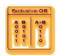
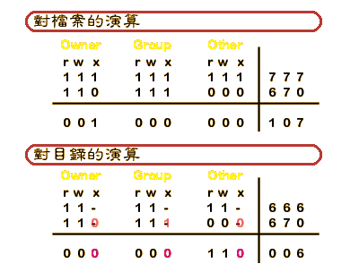

umask （顯示設定值）
umask nnn （設定umask，設定值為000~777的整數）
umask 指令的功能是用來“限定”每一個新增的檔案、目錄的基本使用權限（permission）。譬如說當使用者以編輯器新產生的檔案，或者是從系統的某處拷貝來的新檔案，或者是以輸出重導向的方式產生的新檔案，或是以指令
mkdir 新建的目錄等等，一切新產生的檔案、目錄，它們的最初使用權限，均會受到這個內建指令 umask 的設定值所影響。就是我所說的“限定”。
指令裡的 nnn 所代表的意義與 chmod 指令的 nnn 相似。不同的是 chmod
指令 nnn 是“給於”使用或者是將要改變的許可權限，而 umask 則是“取消”nnn 的使用許可權限。這點是根本性的差異，使用者必須分清楚。
指令 umask 的設定值以三個八進位的數字“nnn”代表。第一個設定數字給使用者自己（owner
user），第二個則是設定給用使用者所屬的群體（group），第三個給不屬於同群體的其它使用者（other）。每一位數字的設定值都是三項不同權限的數值加總，read
權限數值為 4；write 權限數值為 2；execute 權限數值為 1。結合了前三者的權限數值，單一的數字可設定的範圍是
0 ~ 7；整體的可設定範圍是 000 ~ 777。
要知道設定後會得到什麼結果。原則上，方法很簡單。就是用最大值減去設定值即可得到你想要知道的結果。對目錄而言最大值是
777；對檔案而言，最大值則是 666。這個方法對目錄而言完全正確；但對檔案而言會有無法應付的意外。
以下為了說明上的方便，我將以實際運用上，不可能會採用的設定值 067 作為本節例子來加以說明。
譬如當你設定 umask 為 670 ，使用檔案的最大值 666 減去設定值 670，得到的是數值是
負4，已超出數值的定義範圍變成沒有任何意義的數值。但真正使用者會得到的結果卻是檔案對
other 開放 rw 權限；對 owner 與 group 關閉所有權限。所以使用者無法使用減去的方法來獲得完全正確的結果。
表面上，C shell 讓系統使用者使用 umask 時只需輸入一組 3 個數字的設定值。但是，這組設定值對於目錄及檔案卻有著不同的作用結果。所以農夫我打算更進一步地說明其中運作的細節，讓看官們能完全的理解。
對系統程式而言，內建指令 umask
的設定值實際上是群組化的參數，也就是 S_IRWXU、S_IRWXG、S_IRWXO。代表的群組情況如下：
- S_IRWXU = S_IRUSR | S_IWUSR | S_IXUSR
- S_IRWXG = S_IRGRP | S_IWGRP | S_IXGRP
- S_IRWXO = S_IROTH | S_IWOTH | S_IXOTH
也就是說 umask 所設定的三個數字，其實包含了九個不同意涵的參數，用來對映九種不同的使用權限，這些參數會被要產生檔案的程式，或者是要產生目錄的程式帶入並執行出結果。一個
C shell 的使用者必須要有能力完全掌握 umask 的設定，並演算出設定後所得到的結果。
系統在產生一個新目錄，會完全使用到上述的九種權限的參數，所以最大值是 777 ，這對
umask 內建指令而言，可以很容易地使用減去權限的方法來獲得正確的結果。但在產生一個新檔案時，就不是如此。
系統在產生一個新檔案時，creat function 只取用
read 與 write 權限相關參數，也就是 access permission bits 裡的 S_IRUSR, S_IWUSR,
S_IRGRP, S_IWGRP, S_IROTH, S_IWOTH 來定義產生的檔案應該具有何種程度的權限。由於 read（數值
4） 與 write（數值 2） 的權限相加的結果是 6。所以最大的有效數值為 666。至於所有的 execute
權限（數值 1）在此被忽略（access permission bits 為 S_IXUSR, S_IXGRP, S_IXOTH），所以
creat function 在輸出時一律定義為 0，也就是無執行的權限。會對檔案如此限制的理由其實很容易理解。因為幾乎不可能有一個使用者他的所有檔案都絕對必要被固定成為給予
execute 權限(檔案包含的型態相當多，如文字檔、資料檔、圖形檔、執行檔等等)，如果功能被如此設定的話，反而會造成相當多的系統漏洞，所以必須管制成必要時再由使用者自己來打開
execute 權限（這就是為什麼每當你新編輯完成的 C Shell script ，還要用指令 chmod 來加上可執行使用權限才能執行的原因）。
明瞭上述的原因之後，看官們您能理解，指令 umask 的設定值裡面，如果包含了
excute 權限，又運算產生檔案的使用權限時，應該要先減去（或者應該稱為 disable），才來作運算。所以當設定值為
670，其中是第二位數字是奇數，明顯的包含了 S_EXGRP 的數值，所以先減去 1，所已有效設定為 660。此時使用最大值
666 減去 660，得到的便是正確的檔案使用權限。
農夫我使用最大值減去設定值的方式來說明，對一般的使用者應該能較容易理解與運用。在前一版的文字說明中，我曾經提到計算的方式此用的是
XOR 運算法則，它才是實際上程式的運算法則。也就是設定值被程式拆成參數後的參數演算法則。我想學習過邏輯運算的人都清楚 XOR
的運算方式（如右圖所示）。
以下我使用設定值 067 當作例子，以 XOR 的演算法則來實際設定會應該得到的結果。

希望看官們，能理解以上的說明（農夫我發覺改寫後的版本，看起來實在相當囉唆）。以下提供一些比較常用的設定值供看官們參考：
假如使用者想要顯示 umask 的設定值，可鍵入指令 umask，設定值即會顯示出：
% umask
22
以上所顯示的設定值“22”即代表“022”。因第一個數字為“0”時不顯示。假如顯示值為“2”則代表“002”，顯示值為“0”則代表“000”。一般系統的常用的設定值有“002”、“022”、“037”或“077”等幾種。
接著我們實際來設定指令並觀看其使用結果：
5 % umask 022 ; umask
22
6 % ls -l > aa ; ls -l aa
1 -rw-r--r-- 1 akira 61 Aug 31 11:32 aa
7 % mkdir dd ; ls -l
total 2
1 -rw-r--r-- 1 akira 61 Aug 31 11:32 aa
1 drwxr-xr-x 2 akira 512 Aug 31 11:33 dd/
一般而言如果使用者要自行設定或更改這個指令的設定值，最好的方式是將這個指令放在“~/.cshrc”檔案中，讓
C Shell 來為你執行。如果 login 後還有須要更動，可直接在指令行模式下鍵入指令重新設定之。如果使用者不自行設定則系統會給於系統的設定值，一般均為“022”。